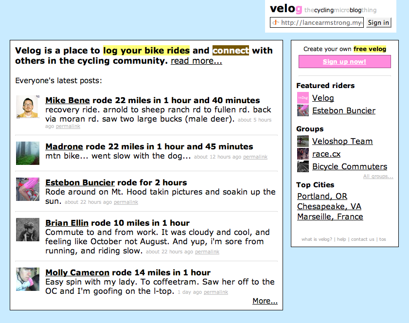
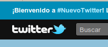

|  |
El microblogging es un servicio de la web 2.0 que a modo de blog permite entradas limitadas a 140 caracteres y que se ordenan cronológicamente, siempre viendo por tanto el más actual. Tiene características de red social y mensajería instantánea, puesto que cada usuario puede hacerse con un conjunto de amistades o seguidores con los que comunicarse. Los mensajes escritos en el muro o página de perfil del usuario son recibidos por todas sus amistades. El usuario puede restringir sus mensajes si así lo desea. |
| 'Velog.org front page' |
U10 - Información digital y Web
2.1. ¿Qué es el microblogging?
Existen varios servicios de microblogging, también llamado nanoblogging, algunos de ellos de código libre:Twitter, Plurk, Jaiku, Tumblr, edmodo.
Sin embargo, el más conocido, llegando a dar nombre a toda una amplia gama de servicios, es twitter que nació en 2006 y ha llegado a ser utilizado por artistas, políticos, etc.
|
 |
El uso del microblogging es variadísimo, desde relacionarse con amistades y personas de intereses similares, a intercambio de enlaces, información de primera mano de eventos y noticias de actualidad, etc. El microblogging se convierte en una fuente inmensa de aprendizaje, dónde cualquiera puede preguntar y ser respondido por cientos de personas. |
Elementos del Microblogging
Menciones (o mentions)
Cuando nos queremos referir a otro usuario de twitter en nuestros mensajes debemos utilizar @nickname. Así tu mensaje no le pasará desapercibido a la persona mencionada entre los miles de mensajes que suelen escribirse al día.
Reenvío (retuits)
Cuando un mensaje nos parece interesante, podemos reenviarlo a todos nuestros seguidores.
Privados o DM
Un mensaje directo a otro usuario de tu servicio de microblogging. Nadie más lo leerá.
Hashtag
Los mensajes de microblogging se pueden etiquetar utilizando hashtags (términos precedidos del símbolo #), por ej. #citaFamosa que sería una etiqueta con la que cualquier usuario podría escribir una cita famosa y cualquier otro podría encontrarla realizando una búsqueda con ese hashtag.
Existen sitios web de tendencias, donde pueden localizarse aquellos hashtags más mencionados al cabo del día. Además los hashtags invitan a la conversación, puesto que cualquiera puede utilizarlos.